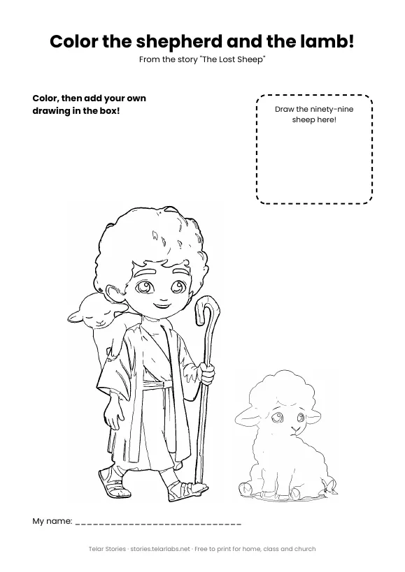
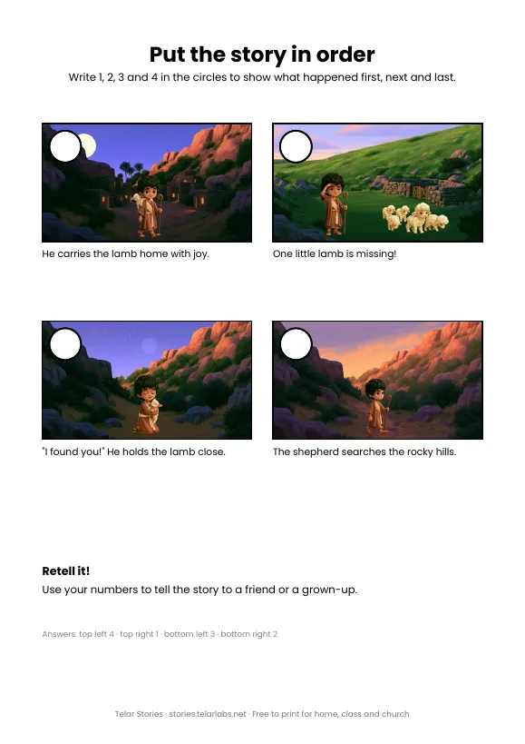
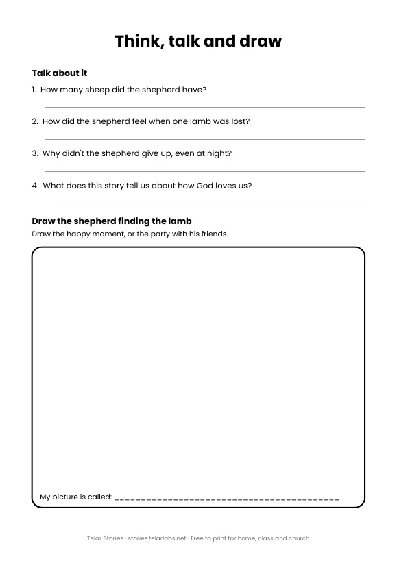

The Lost Sheep
A free narrated picture-book telling of the parable of the lost sheep from Luke 15, with a printable coloring page, sequencing sheet and discussion questions for Sunday school and home.
▶ Open this story in Telar Stories
The story
A shepherd boy loves his sheep and counts them every evening. One night he counts ninety-seven, ninety-eight, ninety-nine… one is missing! He makes sure the others are safe, then searches the rocky hills and thorny bushes as the sun goes down. In the dark and cold he hears a tiny “baa”, and finds the little lamb, alone and afraid. He carries it home on his shoulders and calls his friends: “Be glad with me! I found my lost sheep!”
What it teaches
Jesus told this story to show how much God loves every single person. No one is too small to matter, and God keeps looking for us and is full of joy when we come home. Children can also learn to notice when someone is left out and go looking for them.
Play: put the story in order
Now tell the story in your own words, one picture at a time.
Before the story
- Have you ever lost something special? How did you feel?
- What does a shepherd do?
- Have you ever felt lost or left out?
After the story: questions to talk about
- How many sheep did the shepherd have?
- How did the shepherd know one was missing?
- Where did he look for the lamb?
- How did the lamb feel when it was lost? And when it was found?
- Why did the shepherd have a party?
- What does this story tell us about how God loves us?
Free printable activity pack
Three pages to print at home, in class or at church. Black-and-white friendly, A4 and US Letter.

A coloring page with the shepherd carrying the lamb, the little lamb, and a box to draw the ninety-nine sheep.

Four pictures from the story to number 1 to 4, then retell. Answers at the bottom.

Four questions and a big box to draw the shepherd finding the lamb.
⬇ Download the printables
Activities to try
- Hide the lamb: hide a toy sheep in the room and let children search for it, then celebrate when it’s found.
- Counting game: line up 10 cotton balls, take one away, and let children find which one is missing.
- Memory verse: learn Luke 15:6, “Rejoice with me; I have found my lost sheep.”
- Be a shepherd: talk about someone who might feel left out at school or church, and one way to include them this week.
Make it your own
Open the story in Telar Stories and change anything: your child’s name, the words, the music or the voice. You can record your own voice for each scene and save the finished story as an MP4 video to share with family. See Make your first story video.
Free to use: print as many copies as you need for your family, class or church. Please don’t sell them.